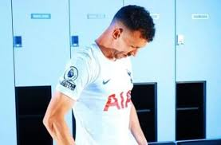
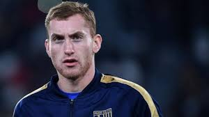
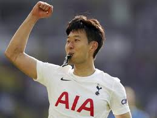
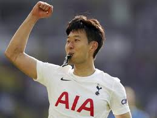

pemain favorit
 

Sejarah Klub Tottenham Hotspur
Fakta-fakta Prestasi yang Diabaikan Banyak Orang
Tottenham Hotspur yang penuh warna bukan sekedar pelengkap sebagai tim Premier League Liga Inggris. Padahal, Tottenham Hotspur bukan hanya yang dibicarakan sebagian besar dikenal sebagai spesialis satu piala liga domestik. Ya, Tottenham Hotspur membuat sejarah dengan menjadi tim Inggris pertama yang memenangkan trofi Eropa, serta memenangkan Piala UEFA pertama yang pernah diselenggarakan.
Fakta Menarik Tottenham
Belum pernah terdegradasi dari Premier League
tottenham Hotspur memang belum pernah juara Premier League, namun mereka juga menjadi salah satu klub yang belum pernah degradasi. Prestasi terbaik yang pernah diraih yaitu finish di posisi runner-up pada musim 2016/2017. Sementara untuk catatan terburuk, Spurs pernah mengakhiri musim di posisi 15 pada musim 1993/1994 .
Lokasi dari
tottenham hotspur
Tottenham Hotspur Stadium' adalah sebuah stadion yang terletak di kota London. Stadion tersebut merupakan markas dari klub sepakbola inggris Tottenham Hotspur di London Utara. Stadion ini memiliki kapasitas 62.062, lalu kapasitasnya ditambahkan menjadi 62.303
Pada 28 Agustus 2015, Son bergabung Premier League klub Tottenham Hotspur seharga £ 22 juta (€ 30 juta) dengan kontrak lima tahun, tunduk pada izin kerja dan izin internasional. Setelah penandatanganannya, ia menjadi pemain Asia termahal dalam sejarah sepakbola.
Harry Edward Kane adalah pesepakbola asal Inggris, yang juga berkewarganegaraan Irlandia. Ia memulai karir profesionalnya bersama klub besar asal negara inggris
klub sepak bola yang berasal dari Tottenham, suatu kawasan yang berada di wilayah utara London. Mereka juga dikenal sbg Spurs, The Spurs dan Tottenham, sementara penggemar mereka memberi mereka nama the Lilywhites karena seragam tradisional mereka yang berwarna putih.